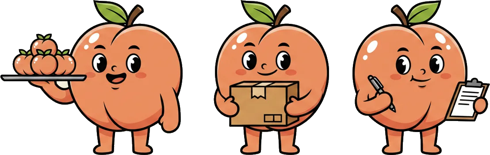

A Lemon Score is not a tattoo. You can contest what's wrong, prove what's changed, and ripen your way from sour back to peach. Here's the whole redemption arc.
No record about you goes live in secret. The moment an employer files an upload, an OTP-verified alert lands on your phone — what was logged, who logged it, and the clock to respond.
You see your own score any time, free. Knowing where you stand is the first step to fixing it.
An employer logged a last-minute bail against your record. +130 points pending.
One tap inside the contest window pauses the upload before its points ever reach your Lemon Score.
Upload your evidence — your roster, your messages, your MC. A contested record sits on hold while it's reviewed.
You can open a line to the ex-employer to resolve it directly. A quality, corroborated rebuttal mitigates — or clears — the score impact.
Akerlof's whole point: the way out of being a lemon is better signalling. Lemon Man gives you six real ways to change the signal you send — at work, and beyond it.
Two verified endorsements from recent employers — via a certified platform link or LinkedIn — pull your score down.
New skills or critical core skills. Willingness to upskill is read as a genuine change in attitude.
A sincere, quality write-in is itself a positive signal. Every genuine one chips the score down.
A quality counter-review of an antagonistic ex-employer rebalances the picture and mitigates your score.
Verified volunteer hours with an IPC-registered charity. Giving your time is a costly, hard-to-fake signal of character — the score rewards it.
Commit a tax-deductible donation to an IPC-registered charity. Real money behind the turnaround reads as genuine good faith.
Stay clean for 6–12 months on top of all that, and the score decays on its own. You planted a peach tree.
If the 21-day contest window has closed and you genuinely think a record is wrong — new evidence, a fair-process concern, anything substantive — you can file a free independent appeal on that specific record.
The appeal is reviewed by a panel that is not the original employer, so the second look is genuinely fresh. It isn't automatic and isn't silent: the original employer is looped in, and a record only comes off if the case for it holds up. Always free for workers.
Open an appeal, attach your evidence, and track it through to an independent panel.

Claiming your profile, seeing your record, contesting and ripening — workers never pay to do any of that.